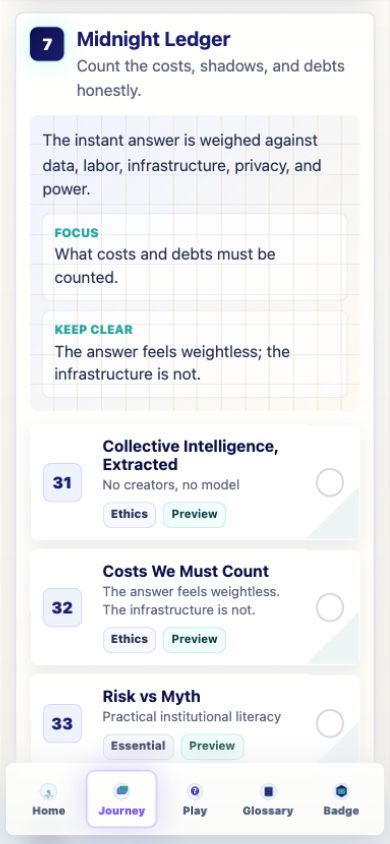
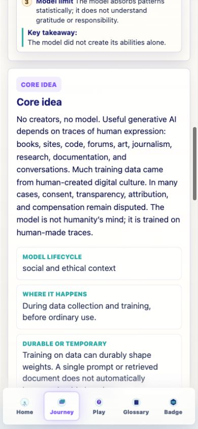
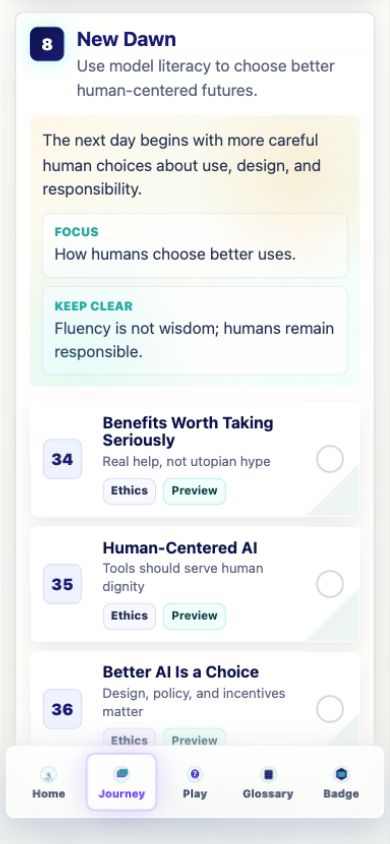
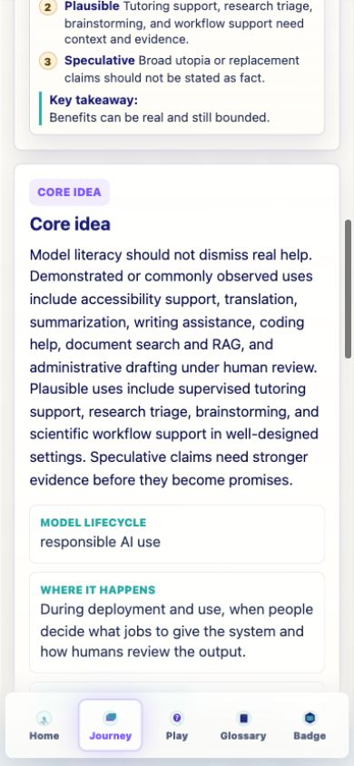
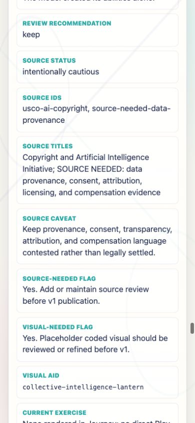
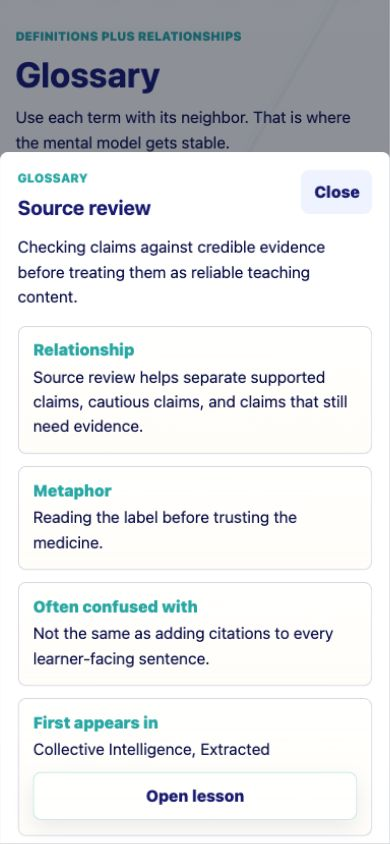

Prompt Life v0.16.0
Source Review + Late-Day Copy Discipline Report
Date: 2026-06-05. Scope: tighten Midnight Ledger and New Dawn, add internal source review metadata, preserve the existing curriculum shape, and avoid learner-facing source clutter.
Response Summary
v0.16 adds an internal source registry and source-status mapping, then uses that review to tighten the strongest late-day claims. Midnight Ledger now speaks carefully about human-created data, unsettled provenance and compensation, infrastructure costs, privacy, labor, and practical risks. New Dawn now frames benefits through evidence tiers and keeps human responsibility central. No new Journey cards, games, generated PNG assets, heavy 3D libraries, or learner-facing PDF features were added.
What Changed
- Bumped the visible Badge version to
0.16.0. - Added
src/data/sourceRegistry.tsfor internal source entries and lesson source-review status. - Added source status, source IDs, source titles, caveats, and source-needed flags to
/review/lesson-cards. - Tightened eight late-day lesson cards across Midnight Ledger and New Dawn.
- Added or improved source-related glossary support, including
Source review,Environmental footprint,E-waste, andAccountability.
Source Discipline
- No precise energy or water statistics were added to learner-facing cards.
- No unverified papal or AI-encyclical claim appears in learner-facing copy.
Antiqua et novais treated in review notes as a Vatican AI document, not as an encyclical.- Official governance, ethics, environmental, labor, and copyright sources are tracked in the registry.
- Claims still needing stronger evidence remain flagged internally rather than turned into confident learner copy.
Files Changed
src/data/content.tssrc/data/sourceRegistry.tssrc/main.tsxdocs/REVIEW_NOTES.mddocs/curriculum/SOURCE_REGISTRY_V0_16.mddocs/curriculum/SOURCE_REVIEW_V0_16.mddocs/curriculum/V0_16_CHANGE_LOG.mddocs/curriculum/prompt-life-v0-16-source-review-report.htmldocs/curriculum/prompt-life-v0-16-source-review-report.pdfdocs/screenshots/v0-16-midnight-ledger-section.pngdocs/screenshots/v0-16-collective-core-copy.pngdocs/screenshots/v0-16-new-dawn-section.pngdocs/screenshots/v0-16-benefits-core-copy.pngdocs/screenshots/v0-16-review-source-status.pngdocs/screenshots/v0-16-glossary-source-review.png
Source Review Summary
- Governance and risk: NIST AI RMF, NIST Generative AI Profile, UNESCO, OECD, EU AI Act, and Council of Europe framework convention were added to the registry.
- Human-centered ethics: Laudato Si', Dignitas Infinita, Antiqua et nova, Rome Call for AI Ethics, and verified Pope Leo XIV material are tracked internally for future curriculum review.
- Environmental and infrastructure: IEA, UNU-INWEH, and AP/UNU reporting are tracked while learner copy remains qualitative and scoped.
- Data, copyright, and labor: U.S. Copyright Office, ILO, OECD, and internal source-needed placeholders keep unsettled claims from becoming overconfident copy.
Major Copy Changes
- Collective Intelligence, Extracted: replaced broad consent and compensation claims with disputed provenance, consent, transparency, attribution, and compensation language.
- Costs We Must Count: reframed infrastructure costs as variable by workload, model, hardware, data center, cooling system, region, electricity source, and deployment choices.
- Risk vs Myth: sharpened real risks around privacy exposure, hallucinations, bias, prompt injection, insecure tools, overreliance, vendor lock-in, and concentration of power.
- Benefits Worth Taking Seriously: separated demonstrated or commonly observed uses, plausible uses, and speculative claims.
- Human-Centered AI and Better AI: made people, institutions, communities, governance, and accountability the center of responsibility.
Still Needs Sources
- Jurisdiction-aware evidence on data provenance, creator consent, attribution, licensing, and compensation.
- Task-specific benefit evidence for accessibility, translation, summarization, tutoring, research triage, administrative drafting, and scientific workflows.
- Education and workplace evidence for deskilling, authentic learning, and labor transition claims.
- A future standalone Prompt Injection / Tool Risk lesson, if added later, should get a security-focused source pass.
Verification
npm install: passed.npm run typecheck: passed.npm run build: passed.npm run build:pages: passed.- Browser QA at 390px: Midnight Ledger, New Dawn, revised lesson previews, internal source-review fields, glossary drawer, Journey filters, Preview/Review/Learn modes, and Journey bottom-nav return-to-top all passed.
- Source/copy scans confirmed no learner-facing precise energy/water statistics, unverified papal AI-encyclical claim, or internal source labels outside the review route.
Known issue: Vite still reports the existing single JavaScript chunk above 500 kB after minification.
Next Three Recommended Steps
- Do a focused evidence pass on benefits, especially education, research, tutoring, accessibility, and scientific workflow claims.
- Add a compact internal source dashboard or filter if the review route becomes crowded.
- Plan a dedicated Prompt Injection / Tool Risk card only if the curriculum expands in v0.17 or later.
Screenshot: Midnight Ledger
390px Journey section with cautious cost and provenance framing.

Screenshot: Collective Core Copy
Revised learner-facing copy for data provenance, attribution, consent, and compensation.

Screenshot: New Dawn
390px Journey section with human-centered responsibility framing.

Screenshot: Benefits Core Copy
Evidence tiers are visible in the revised Benefits lesson.

Screenshot: Internal Source Review Fields
The review route shows source status, source IDs, titles, caveats, and source-needed flags for maintainers.

Screenshot: Glossary Source Review Drawer
The glossary remains usable and the Source review term opens in the preserved drawer pattern.
